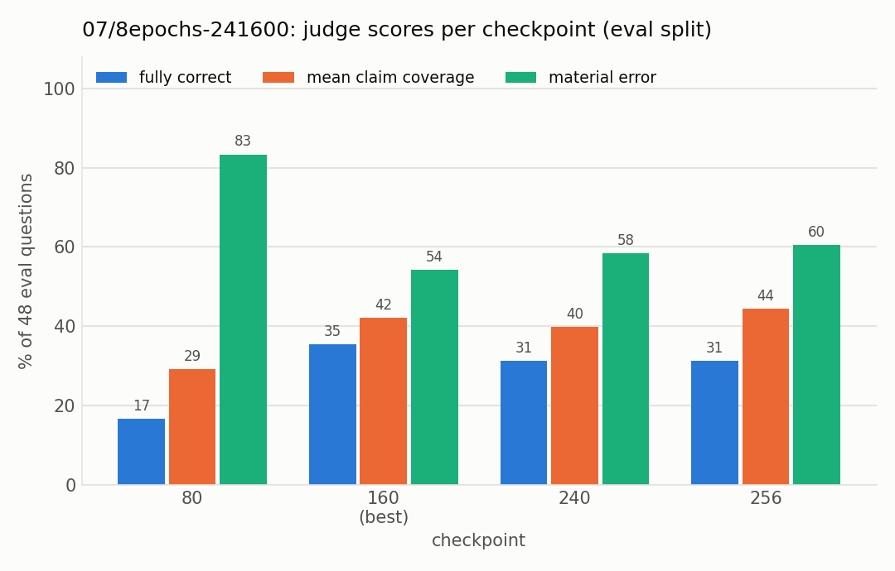
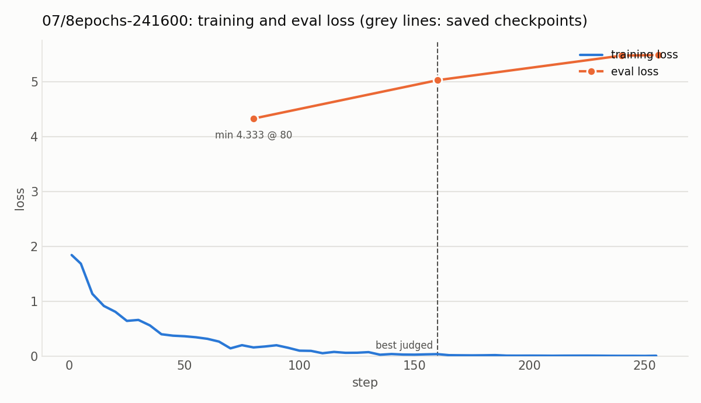
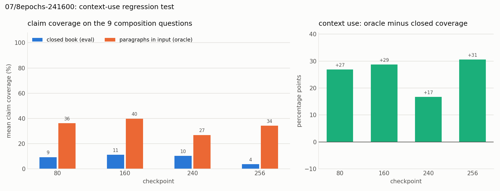

Experiment 07: Chain of thought on top of the plain-text adapter
Tests with OPALX repo slice · field-solver / space-charge slice, 39 topics, judged by Claude Opus 5.5 against required and forbidden claims (README, source files)
1Summary
- Idea
- Continue the 06 adapter with question–answer rows in Qwen3's native chat format with thinking: first recall the facts per topic, then connect them, then answer. Context rows teach picking the relevant paragraphs; 12 topics are held out.
- Upshot
- Trained topics are learned (8 epochs: 63% of their single-topic questions fully correct), but the 12 held-out topics stay at 0, compositions at 0 of 9, oracle coverage falls from 06's 0.61–0.69 to 0.27–0.40, and every prompt is forced into an OPALX answer.
2Setup
- Model
- Qwen3-8B, 4-bit, continuing the LoRA adapter of experiment 06 (
runs/06/241337/checkpoint-312; same r 32 / α 32 / target modules). - Configurations
- 06 config plus
init_adapter, lr 5e-5.config.yaml: 3 epochs, batch 8, 40 steps per epoch, 120 steps, checkpoint every 20. Variant8epochs: 8 epochs, batch 10, 32 steps per epoch, 256 steps, checkpoint every 80; everything else identical. Native Qwen3 chat template with<think>for the question rows, plain text for the replay rows. Evaluation samples at temperature 0.65, top-p 0.95, top-k 20, allows 1,536 new tokens, and the judge sees only the text after</think>. - Training data
- 320 rows (
experiments/07/build.py,cot.py). The 39 topics are split into 27 trained and 12 held out (the topics of eval-040, 043, 045, 048), which get no question rows.- single (108): 27 topics × 4 questions; thinking = recall answer, answer = mechanism answer
- multi (74): 37 groups of 2–3 topics × 2 questions; thinking = recall answers + a connecting sentence, answer = a newly written synthesis
- context (60): relevant paragraphs plus 1–2 distractors in the prompt; the thinking names and quotes the relevant ones; 6 counterfactual rows with a renamed identifier teach following the context over memory
- replay (78): the plain-text rows of 06 for all 39 topics, so the held-out topics are not forgotten
3Hypothesis
06 stores the facts but questions do not retrieve them; 02 retrieves single facts but cannot connect them or read its context. 07 should teach the model to use the stored facts:
- trained-topic questions improve over 06 (closed book about 0.1–0.2 coverage);
- compositions improve because the facts are written out before they are combined (latent composition fails, explicit composition works);
- context use stays near 06's level instead of collapsing like 02's.
The held-out topics are the real test: if their single-topic questions improve too, the model learned a general skill (retrieving stored facts by question) rather than another question → answer mapping. Expected: held-out well below trained.
4Results
| 3 epochs (checkpoint 120) | 8 epochs (checkpoint 160) | |
|---|---|---|
| eval fully correct | 19% | 35% |
| single-topic, trained (27): fully correct / coverage | 9/27 / 0.51 | 17/27 / 0.69 |
| single-topic, held-out (12): fully correct / coverage | 0/12 / 0.08 | 0/12 / 0.06 |
| composition coverage (trained / held-out) | 0.07 / 0.00 | 0.13 / 0.08 |
| material errors | 77% | 54% (trained 30%, held-out 92%) |
| oracle coverage (all checkpoints) | 0.27–0.44 | 0.27–0.40 |
| checkpoint | fully correct | single-topic correct | mean claim coverage | composition coverage | material errors | truncated |
|---|---|---|---|---|---|---|
| 20 | 0/48 (0%) | 0/39 (0%) | 0.061 | 0.03 | 45/48 (94%) | 2 |
| 40 | 1/48 (2%) | 1/39 (3%) | 0.156 | 0.04 | 40/48 (83%) | 3 |
| 60 | 2/48 (4%) | 2/39 (5%) | 0.182 | 0.06 | 40/48 (83%) | 0 |
| 80 | 1/48 (2%) | 1/39 (3%) | 0.116 | 0.00 | 43/48 (90%) | 0 |
| 100 | 5/48 (10%) | 5/39 (13%) | 0.318 | 0.07 | 40/48 (83%) | 0 |
| 120 (best) | 9/48 (19%) | 9/39 (23%) | 0.314 | 0.04 | 37/48 (77%) | 0 |
| checkpoint | fully correct | single-topic correct | mean claim coverage | composition coverage | material errors | truncated |
|---|---|---|---|---|---|---|
| 80 | 8/48 (17%) | 8/39 (21%) | 0.292 | 0.09 | 40/48 (83%) | 1 |
| 160 (best) | 17/48 (35%) | 17/39 (44%) | 0.420 | 0.11 | 26/48 (54%) | 0 |
| 240 | 15/48 (31%) | 15/39 (38%) | 0.398 | 0.10 | 28/48 (58%) | 0 |
| 256 | 15/48 (31%) | 15/39 (38%) | 0.444 | 0.04 | 29/48 (60%) | 1 |

Fully correct peaks at checkpoint 160 (35%) and drops to 31% afterwards while claim coverage still rises slightly; material errors stay above half of the answers at every checkpoint.

The training loss is close to zero from about step 130 on. The eval loss is lowest at the first checkpoint (80) and rises from there, while the judge prefers checkpoint 160.
| checkpoint | closed-book coverage | oracle coverage | context-use bonus |
|---|---|---|---|
| 80 | 0.09 | 0.36 | +0.27 |
| 160 | 0.11 | 0.40 | +0.29 |
| 240 | 0.10 | 0.27 | +0.17 |
| 256 | 0.04 | 0.34 | +0.31 |

The adapter still gains from the paragraphs in its input (bonus +0.17 to +0.31), but oracle coverage reaches only 0.27–0.40, against 0.61–0.69 for the starting adapter 06.
The prompt format also changes (chat with thinking and sampling instead of greedy Alpaca), so this is not a clean ablation against 06 or 02.
5Conclusion
- Knowledge is absorbed, but only where there are question–answer rows: with longer training, the trained topics reach 0.69–0.72 coverage and 63% fully correct.
- No transfer: the held-out topics stay at about 0 at every checkpoint of both runs, so the stage-1 (06) knowledge does not become retrievable without direct question–answer rows on the topic. The hypothesis "06 stores, 07 teaches using it" does not hold at this scale.
- No composition: the multi-topic chain-of-thought rows do not help (coverage at most 0.18, 0 of 9 fully correct, material errors on the held-out compositions throughout).
- Material errors stay high. The
<think>recall invents facts when the topic is not known (e.g. eval-010: it "recalls" thattimeStep > 0is required, the opposite of the reference), and the answer often drifts away from its own think block. - General capability is badly damaged. Asked by hand (
scripts/chat.py, checkpoint 256) "Hello, who was Hillary Clinton?", the model writes one correct sentence in the think block ("former U.S. secretary of state and former first lady") and then turns her into an OPALX "eponymous particle-container constructor" with invented validation rules. The answer is pure OPALX recitation (factory,makeSpaceChargeSolver,FieldSolverCmd) with nothing about the question. Every prompt is forced into the trained think → OPALX-facts format. Forgetting benchmarks have not been run. - Context use is lost: oracle coverage falls from the starting adapter's (06) 0.61–0.69 to 0.27–0.40, despite the ~60 context rows.
- Next: the same data without the think block (answer only), to see whether the chain-of-thought recall causes the errors. If transfer to the held-out topics stays the goal, plain question–answer diversity per topic is the only thing that has moved scores so far. 02 does not show the same catastrophic forgetting.
Related: experiment 06 (the starting adapter) · experiment 04 (the earlier composition attempt) · experiment 05 (the context-use test)